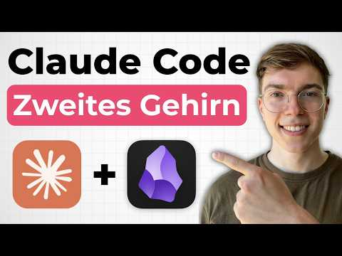
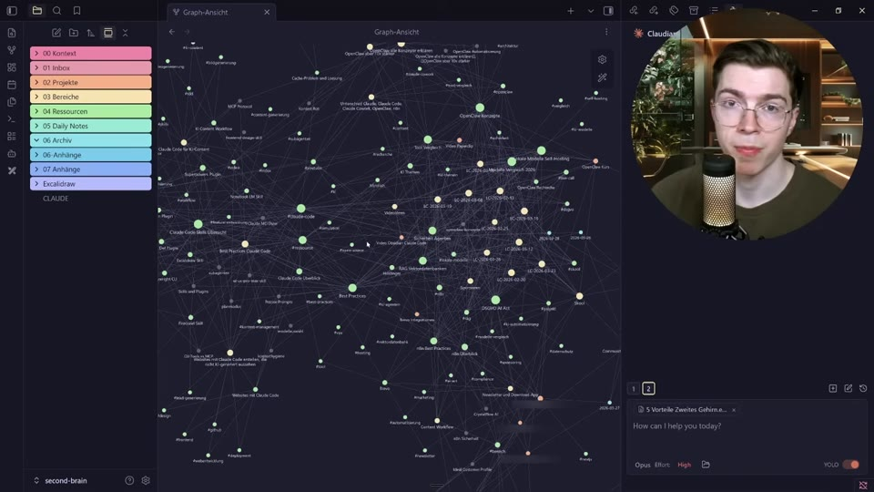
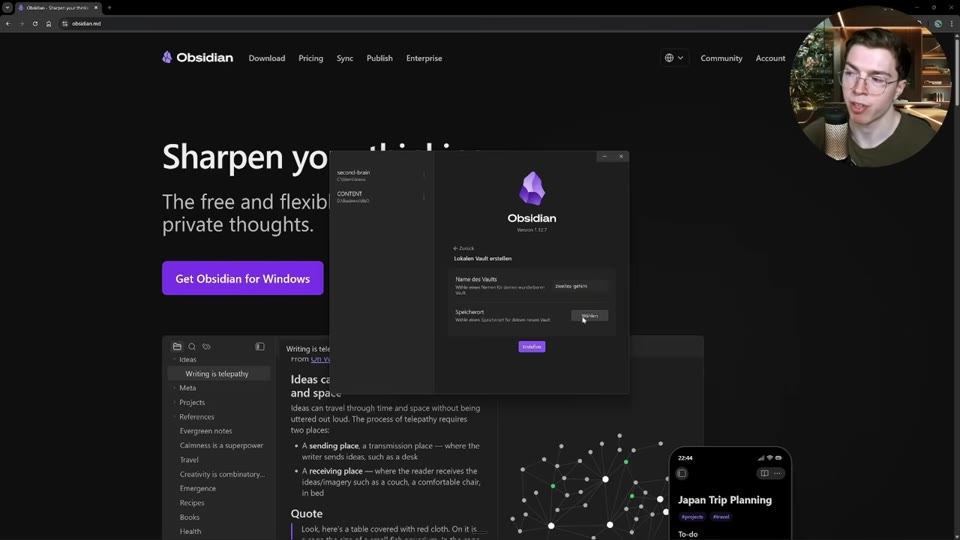
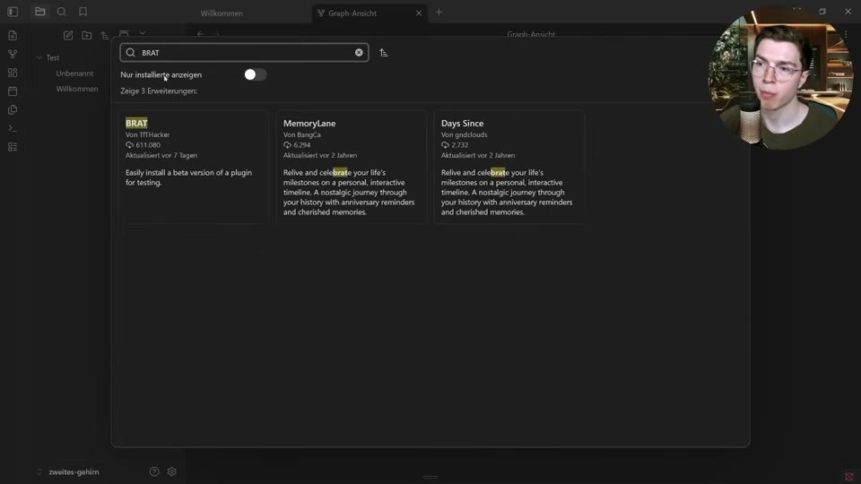
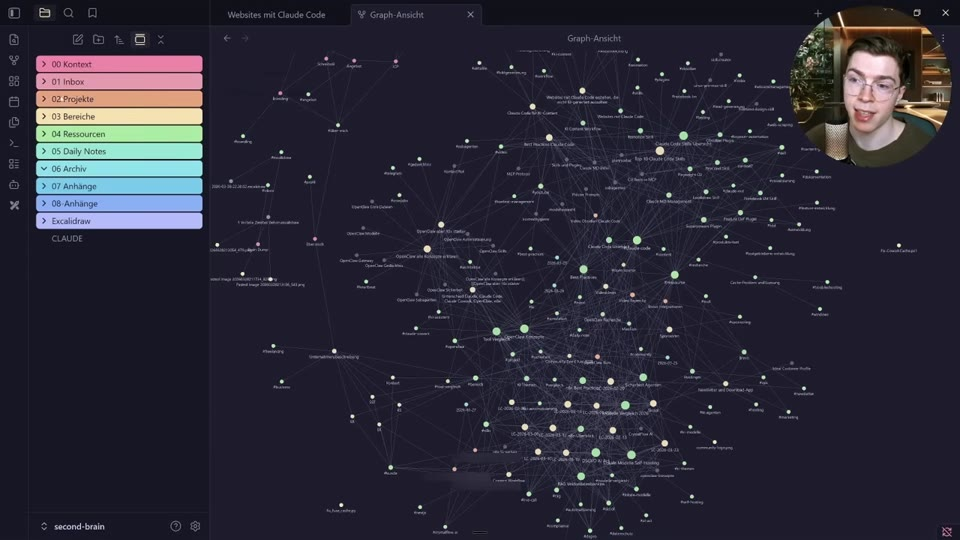
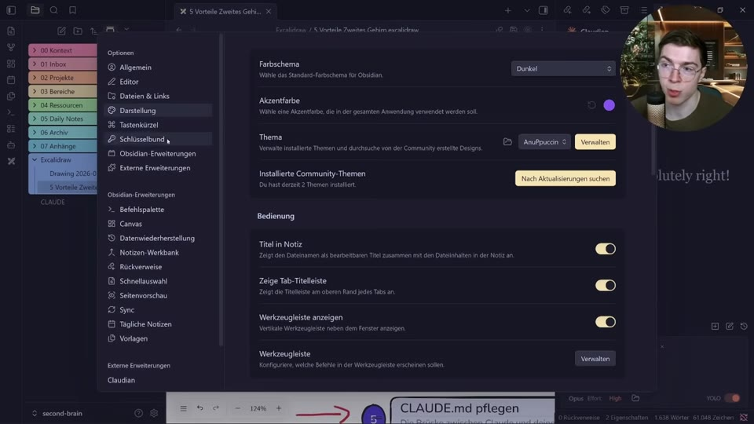

Selbststudium · Video-Transkript

Quelle: „Obsidian + Claude Code: So baust du dein zweites Gehirn" · Julian Ivanov | KI-Automatisierung · 36 Min · automatisch transkribiert
Claude fängt jede Session bei null an, weil das eingebaute Memory nur ein paar Grundfakten speichert. Die Lösung: das eigene Wissen einmal strukturiert in Obsidian ablegen – Claude Code bzw. Cowork liest, pflegt und erweitert dieses "zweite Gehirn" danach eigenständig.
Obsidian als Gedächtnis für Claude
ab 0:00Obsidian speichert das komplette Businesswissen – Projekte, Branding, Schreibregeln, Entscheidungen – an einem Ort, vernetzt in einem Graphen. Claude Cowork und Claude Code haben Zugriff darauf, haben die Struktur selbst eingerichtet und pflegen sie auch selbst; der Nutzer orchestriert nur von oben.
Ohne so ein System fängt jede Claude-Session bei null an: Wer man ist, wie man schreibt, was letzte Woche passiert ist – all das muss man immer wieder neu erklären, weil Claudes eingebaute Memory-Funktion nur ein paar Grundfakten speichert.

Wissen geht nicht mehr verloren
ab 3:12Statt dass eine gefundene Lösung mit dem Schließen des Chats wieder verschwindet, legt Claude sie auf Zuruf als Markdown-Datei im Vault ab – jede Erkenntnis bekommt einen festen Platz und ist beim nächsten Mal wieder auffindbar.
Claude versteht dich wirklich
ab 3:56Ein Kontextordner mit Schreibstil, Hintergrund, idealem Kundenprofil, Branding und Angebot gibt Claude jederzeit Zugriff auf die wichtigsten Infos – z. B. liest Claude vor einem LinkedIn-Post einfach die Schreibstil-Datei aus. Über Daily Notes lassen sich zusätzlich frühere Tage oder Meetings gezielt abfragen.
Dein Kontext wird automatisch besser
ab 4:53Claude kann nicht nur lesen, sondern auch selbst in den Vault reinschreiben. Beispiel aus dem Video: Auf den Hinweis "keine Gedankenstriche mehr, merk dir das" ergänzt Claude die entsprechende Regel eigenständig in der Schreibstil-Datei – ohne dass man selbst etwas einträgt.
Dein Wissen gehört dir
ab 6:03Der Vault ist einfach ein lokaler Ordner mit Textdateien, kein Anbieter-Lock-in. Claude Cowork, Claude Code, Codex oder jedes künftige Tool mit Dateizugriff kann direkt auf denselben Ordner zeigen – ohne Export oder Import, ohne bei null anzufangen.
Skills werden einfacher
ab 6:59Skills brauchen oft Referenzdateien (Kundenprofil, Tonalität, Beispiele). Ohne zentrales Wissen landen diese Infos dupliziert in mehreren Skills – ändert sich etwas, muss man es überall anpassen. Zeigen die Skills stattdessen auf den gemeinsamen Kontextordner, wirkt eine Änderung (z. B. "keine Gedankenstriche") sofort in allen Skills gleichzeitig.
Diagramme & Verlinkungen
ab 9:02Über das Excalidraw-Plugin lässt Claude Code eigenständig Diagramme zu bestimmten Themen erstellen und im Vault ablegen. Markdown-Dateien können außerdem andere Dateien verlinken – ein Klick öffnet die verknüpfte Notiz direkt, und genau diese Verlinkungen bilden die Graph-Ansicht.
Obsidian installieren & Vault anlegen
ab 10:40Auf obsidian.md herunterladen, dann direkt einen neuen Vault erstellen (ein Vault ist einfach ein Ordner) – Name vergeben, z. B. "Zweites Gehirn", Speicherort auswählen, fertig.

Claude-Plugin direkt in Obsidian per BRAT
ab 12:04Community-Erweiterungen aktivieren (Zahnrad → Externe Erweiterungen), dann das BRAT-Plugin installieren & aktivieren – es erlaubt, Beta-Plugins per GitHub-Link zu installieren, die noch nicht offiziell gelistet sind.
Über BRAT dann "Add a Beta Plugin", den Link zum Claudian-GitHub-Repository einfügen, "Latest Version" wählen und installieren. Damit erscheint ein Claude-Chatfenster direkt in Obsidian – mit dem eigenen Claude-Account verbunden (Pro-Plan ab ca. 18 €/Monat nötig für Cowork/Code, Max-Plan für 90 €/Monat bei intensiverer Nutzung).

Obsidian-Skill für Claude Code installieren
ab 14:13Ein separates GitHub-Repository mit fünf Skills erklärt Claude, wie es mit dem Obsidian-Vault, der Obsidian-CLI, Canvases und den Verlinkungen/Eigenschaften korrekt umgeht. Installation: Link zum Repository in den Claude-Chat einfügen und bitten, es zu installieren (Sonnet oder Opus reichen, YOLO-Modus erspart Rückfragen bei jedem Befehl).
Die 8-Ordner-Struktur
ab 15:27Kontext (wer du bist, Schreibstil, Kundenprofil, Branding), Inbox (unsortierte Gedanken/Brain-Dump), Projekte (Dinge mit fester Deadline), Archiv (fertige Projekte), Bereiche (laufende Verantwortlichkeiten ohne Deadline, z. B. Marketing), Ressourcen (allgemeines Wissen, Tool-Doku, Vorlagen), Daily Notes (tägliches Logbuch) und Anhänge (Bilder/Dateien). Optional dazu ein Excalidraw-Ordner für Diagramme.

Onboarding per CLAUDE.md
ab 20:22Eine vorbereitete CLAUDE.md (Download nach Newsletter-Anmeldung) fungiert als Setup-Assistent: Sie interviewt in ca. 15–20 Minuten Schritt für Schritt zu Hintergrund, Schreibstil, Projekten usw. und richtet danach automatisch die passende, personalisierte Ordnerstruktur ein.
Nach dem Onboarding wird aus der Datei eine dauerhafte Systemnachricht: kurzer Bereich über die Person, die Vault-Struktur (damit Claude sofort weiß, wo was liegt, statt bei jeder Session alle Ordner zu durchsuchen) sowie feste Regeln für Session-Start (Inbox prüfen & einsortieren anbieten) und Session-Ende (Daily-Note-Eintrag, neue Erkenntnisse ablegen, Inbox aufräumen).
Tägliche Arbeit mit Cowork/Code
ab 24:40Eine einfache Frage wie "was steht gerade an?" lässt Claude selbstständig die letzten Daily Notes, die Inbox und den Projektordner durchsehen und einen Statusbericht geben – inklusive Angebot, offene Inbox-Einträge gleich in die passenden Ordner einzusortieren. Am Tagesende reicht die Bitte um eine kurze Zusammenfassung, die Claude automatisch als Daily Note speichert.
Weekly Review
ab 26:53Am Ende der Woche Claude bitten, die Daily Notes der letzten Woche und das Archiv durchzugehen und zusammenzufassen, was erledigt wurde und welche Projekte abgeschlossen sind.
Meeting-Notizen verarbeiten
ab 27:13Transkript eines Calls einfach in die Inbox legen und Claude bitten, die wichtigsten Infos zu verarbeiten und im Vault abzulegen – Claude sortiert die Inhalte dann selbstständig in die passenden Ordner ein (z. B. in die Ressourcen).
Vault als Projektkontext nutzen
ab 27:54Bei einem neuen, ähnlichen Projekt Claude auf ein vergleichbares altes Projekt im Archiv oder Kundenordner verweisen und bitten, den gleichen Lösungsansatz zu nutzen – liefert deutlich passendere, weniger generische Vorschläge als ganz ohne Vorwissen.
Der Compound-Effekt über Zeit
ab 28:39Nach einer Woche: 15–20 Dateien, Claude kennt die Grundlagen – nett, aber noch kein großer Unterschied. Nach einem Monat: 40–60 Dateien, Projekte dokumentiert, Schreibstil definiert, spürbar bessere Outputs. Nach 3 Monaten: rund 100 Dateien, Claude kennt Workflows und Entscheidungshistorie und schlägt selbst Verbindungen vor. Nach 6 Monaten: ein echtes Wissenssystem, in dem jede neue Information ans bestehende Wissen andockt – und das sich verlustfrei auf jedes neue KI-Tool übertragen lässt.
Fünf Praxis-Tipps
ab 30:411) Nicht die perfekte Struktur vorab bauen – einfach mit wenigen Dateien starten, der Rest wächst organisch. 2) Daily Notes nicht vergessen – kostet 30 Sekunden, bringt langfristig viel. 3) Nicht alles sofort migrieren – erst das Nötigste, der Rest kommt nach und nach.
4) "Merk dir das" zur Gewohnheit machen, sobald eine Regel, Präferenz oder Entscheidung feststeht – das ist der eigentliche Wachstumsmotor. 5) Die CLAUDE.md-Datei aktiv pflegen: Legt Claude etwas falsch ab, einfach in der CLAUDE.md als Anweisung hinterlegen, wie es künftig laufen soll – muss nicht mal selbst eingetragen werden, Claude kann das auf Zuruf übernehmen.
Obsidian farblich gestalten
ab 32:57Unter Einstellungen → Darstellung → Thema ein Community-Theme wählen (im Video: AnuPpuccin). Zusätzlich das Plugin Style Settings installieren, um Farben im Detail anzupassen – inklusive eines "Rainbow"-Stils auf "Full" für die bunte Optik.
Für farbige Gruppen in der Graph-Ansicht: in den Graph-Einstellungen unter "Gruppen" einen Ordnerpfad hinterlegen und dazu eine Farbe wählen – einmal pro Ordner wiederholen, dann sind Kontext, Inbox, Projekte usw. auch im Graphen farblich unterscheidbar.
